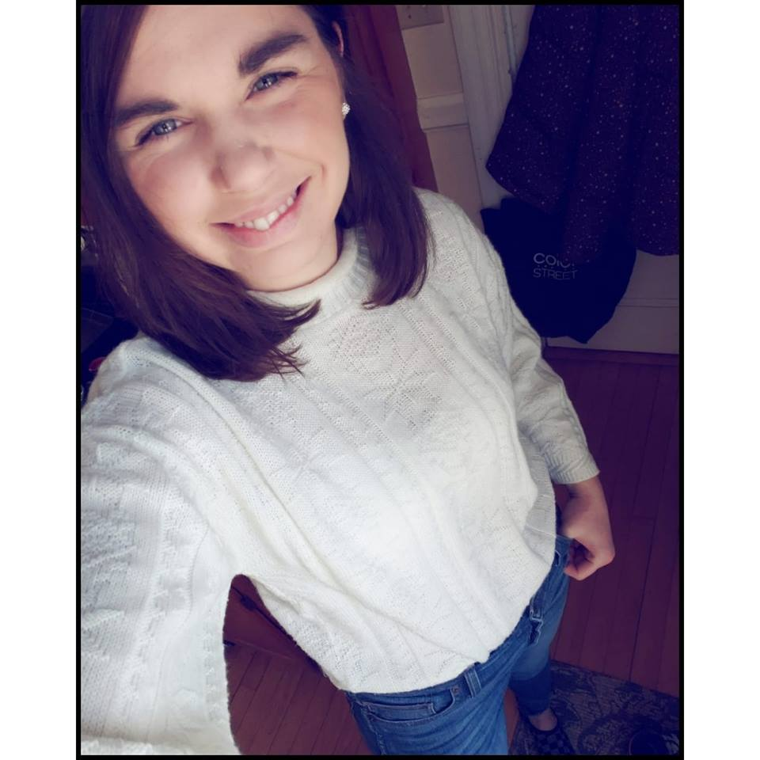

About Me

My name is Kristen.
I have a two year-old son named Desmond. He is quite the character. He absolutely loves counting and saying his alphabet and has become quite the little instigator. He is my little best friend.
I grew up wanting to be a web designer because my grandfather taught me from a young age that its something I would be good at.
My grandfather taught me about building websites when I was young, maybe ten years old, and I made my first webpages on Geocities.
This was more of a drag-and-drop kind of thing from what I remember but I thought it was fun.
In high school I took web design courses where I learned HTML and CSS. This was 14 years ago so it has changed a lot since then!
I wanted to study web design after high school but there weren't any programs that I knew of. Also, my parents wanted me to get a bachelor's degree.
SO...I pursued another interest of mine which was to become a doctor. That's why I have a bachelor's degree in Biology from Gordon College.
I've had a lot of personal life changes that I didn't expect after college including having a son.
I have stayed at home with Desmond for the past few years and started an online clothing re-selling business.
I currently work from home selling pre-owned clothing on Poshmark and eBay.
Click here to check out my Poshmark closet!
I am very excited that I discovered this coding bootcamp opportunity. I have been desperately searching for a career
that is practical for my lifestyle as a toddler mom but still provides daily challenges and allows for creativity and problem-solving.
This will be a perfect career for me!